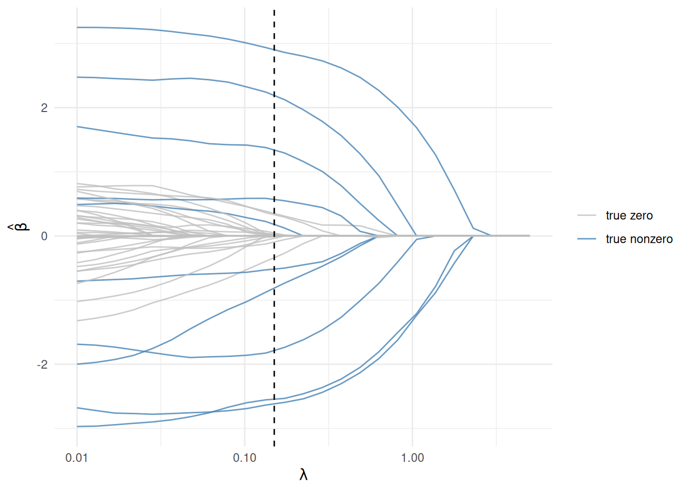

elastic_reg <- function(beta, lambda = 0, alpha = 0) {
ridge <- (1 - alpha) / 2 * sum_squares(beta)
lasso <- alpha * p_norm(beta, 1)
lambda * (lasso + ridge)
}5 Penalized Regression: Ridge, Lasso, Elastic Net
NoteWhat you’ll be able to do
Add an \(\ell_2\) (ridge), \(\ell_1\) (lasso), or combined (elastic-net) penalty to a regression; watch the lasso recover a sparse signal and select the right variables; validate against glmnet; and trace a regularization path.
5.1 Why regularize?
In Chapter 2 we recovered coefficients by least squares. When predictors are many or correlated, plain least squares overfits — the estimates blow up and become unstable. The cure is a penalty that discourages large coefficients. The two classics are the squared \(\ell_2\)-norm and the \(\ell_1\)-norm; the elastic net combines them:
\[ \underset{\beta}{\mbox{minimize}}\quad \frac{1}{2n}\|y - X\beta\|_2^2 \;+\;\lambda\Big(\tfrac{1-\alpha}{2}\|\beta\|_2^2 + \alpha\|\beta\|_1\Big). \]
Here \(\lambda \ge 0\) sets the strength and \(\alpha\in[0,1]\) dials between the two: \(\alpha = 0\) is ridge (smooth shrinkage), \(\alpha = 1\) is lasso (sets coefficients exactly to zero — variable selection), and in between is the elastic net.
5.2 One modular penalty
Because the penalty is just an R function, the whole family is a few lines:
5.3 A structured, sparse signal
To see regularization work, we build data with a known sparse truth: only 10 of \(p = 50\) coefficients are nonzero, the features are correlated (Toeplitz, \(\rho = 0.8\)), and \(n = 100\) is barely above \(p\) — exactly where least squares falls apart.
set.seed(1)
p <- 50; n <- 100
Sigma <- 0.8^abs(outer(seq_len(p), seq_len(p), "-"))
X <- MASS::mvrnorm(n, mu = rep(0, p), Sigma = Sigma)
beta_true <- rep(0, p)
nz <- c(1, 5, 10, 15, 20, 25, 30, 35, 40, 45) # the true nonzero positions
beta_true[nz] <- c(3, -2.5, 2, -1.5, 1, -3, 2.5, -2, 1.5, -1)
signal_sd <- sqrt(drop(t(beta_true) %*% Sigma %*% beta_true))
y <- X %*% beta_true + rnorm(n, sd = signal_sd / 3) # signal-to-noise ratio ~ 35.4 Recovering the signal with the lasso
The lasso (\(\alpha = 1\)) both shrinks and selects — it should drive the 40 irrelevant coefficients to zero and recover the 10 real ones. Fit it at a moderate penalty:
beta <- Variable(p)
loss <- sum_squares(y - X %*% beta) / (2 * n)
lambda <- 0.15
prob <- Problem(Minimize(loss + elastic_reg(beta, lambda, alpha = 1)))
psolve(prob)[1] 3.864977check_solver_status(prob)How well did it do? Line up the estimate against the truth at the 10 true-nonzero positions (plus a few that should be zero) — and against glmnet while we are at it:
library(glmnet)
g <- glmnet(X, y, family = "gaussian", alpha = 1, lambda = lambda,
standardize = FALSE, intercept = FALSE)
data.frame(truth = beta_true,
CVXR = round(value(beta), 3),
glmnet = round(as.numeric(coef(g)[-1]), 3))[c(nz, 2, 3, 4), ] truth CVXR glmnet
1 3.0 2.902 2.904
5 -2.5 -2.544 -2.540
10 2.0 1.344 1.338
15 -1.5 -0.514 -0.512
20 1.0 0.196 0.195
25 -3.0 -2.604 -2.602
30 2.5 2.196 2.196
35 -2.0 -1.795 -1.794
40 1.5 0.569 0.567
45 -1.0 -0.816 -0.815
2 0.0 0.000 0.000
3 0.0 0.000 0.000
4 0.0 -0.038 -0.043The lasso recovers every true coefficient’s sign and rough magnitude, leaves the irrelevant ones at (or near) zero, and agrees with glmnet to three decimals — a genuine, non-trivial fit, not a vector of zeros. (Correlated features buy a few small false positives; that is the cost of the setting.)
5.5 The regularization path
Sweeping \(\lambda\) traces each coefficient from its near-least-squares value down to zero. As in Chapter 2 this is the same problem re-solved over a grid — the place where the Parameter trick of Chapter 8 pays off:
lambda_vals <- 10^seq(-2, 0.7, length.out = 25)
beta_vals <- sapply(lambda_vals, function(l) {
psolve(Problem(Minimize(loss + elastic_reg(beta, l, alpha = 1))))
value(beta)
})df <- data.frame(lambda = lambda_vals, t(beta_vals)) |>
pivot_longer(-lambda, names_to = "coef", values_to = "value")
df$true_nz <- as.integer(sub("X", "", df$coef)) %in% nz
ggplot(df, aes(lambda, value, group = coef, color = true_nz)) +
geom_line(alpha = 0.8) +
geom_vline(xintercept = lambda, linetype = "dashed") +
scale_x_log10() +
scale_color_manual(values = c("grey75", "steelblue"),
labels = c("true zero", "true nonzero"), name = NULL) +
labs(x = expression(lambda), y = expression(hat(beta))) +
theme_minimal()
The blue (truly nonzero) coefficients stay large longest; the grey ones collapse to zero quickly. The dashed line marks the \(\lambda\) we fit above.
5.6 Exercise
Exercise. Refit the same data with ridge (\(\alpha = 0\)) at lambda = 0.15 and compare with the lasso fit. How many coefficients does each set exactly to zero — and which one selects variables?
TipSolution
fit_at <- function(a) {
psolve(Problem(Minimize(loss + elastic_reg(beta, 0.15, a))))
value(beta)
}
ridge_b <- fit_at(0)
lasso_b <- fit_at(1)
c(ridge_zeros = sum(abs(ridge_b) < 1e-4),
lasso_zeros = sum(abs(lasso_b) < 1e-4))ridge_zeros lasso_zeros
0 33 Ridge shrinks every coefficient but zeroes essentially none; the lasso zeroes the large majority. That is the defining difference — only the \(\ell_1\) penalty performs variable selection. The elastic net (\(0 < \alpha < 1\)) blends the two, which helps when correlated predictors should enter or leave together.
5.7 Takeaways
- Ridge, lasso, and elastic net are one family, selected by \(\alpha\) — and in CVXR, one small function.
- With a real sparse signal, the lasso recovers the support and matches
glmnet; the regularization path is just the same problem re-solved over a \(\lambda\) grid. - Only the \(\ell_1\) (lasso) part sets coefficients exactly to zero — the source of its variable-selection power.
For more, see Elastic Net.